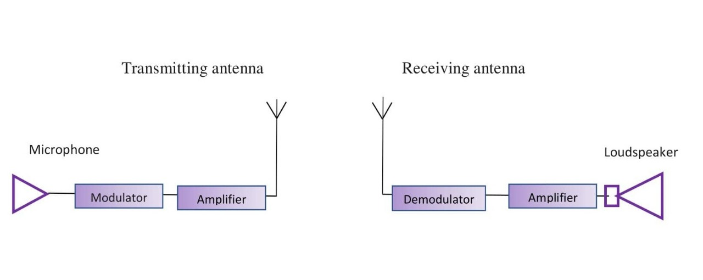
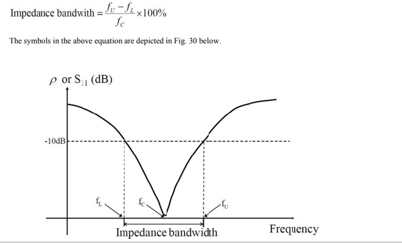
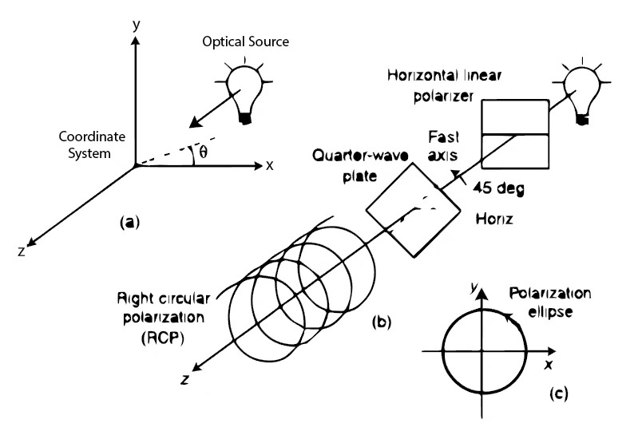
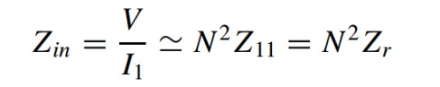
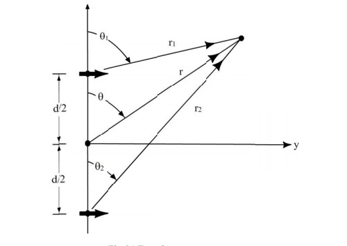
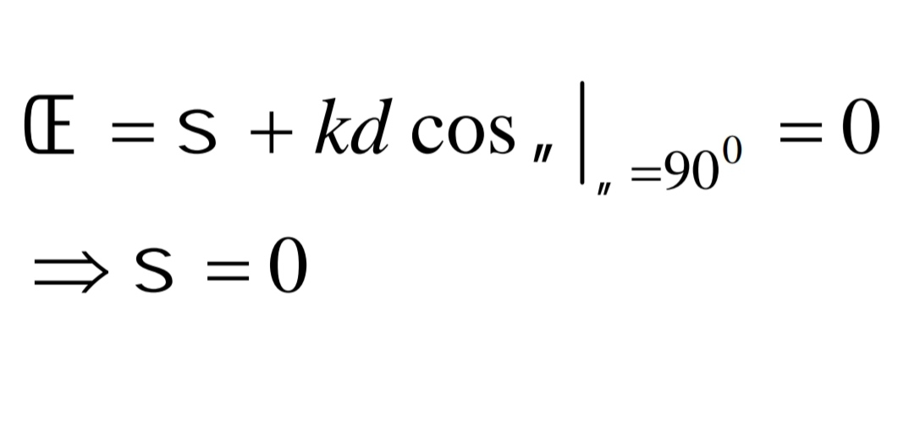

On completion of this experiment the user will get a knowledge of analysis and design techniques of antennas and can be able to
1. Explain the antenna
2. explain parametes of antenna
3. Determine the beam width, gain and directivity of simple and folded dipole antenna and broad side array antenna
Antennas are an indispensable part of any wireless communication system. In any wireless communication system, after a radio frequency (rf) signal has been generated in a transmitter, some means must be used to radiate this signal through space to a receiver. The device that does this job is the antenna. The transmitter signal energy is sent into space by a transmitting antenna, the rf signal is then picked up from space by a receiving antenna.
The rf energy is transmitted into space in the form of an electromagnetic field. As the travelling electromagnetic field arrives at the receiving antenna, a voltage is induced into the antenna (usually a conductor). The rf voltages induced into the receiving antenna are then passed into the receiver and converted back into the transmitted rf information. So, antennas can be thought of as a “transducer” that converts radio waves into electrical currents and voltages and vice versa. More specifically, these are devices designed to radiate or receive electromagnetic energy efficiently in a prescribed manner.
Radiation pattern is a graphical representation of the radiation properties of the antenna as a function of space coordinate
The characteristics to note down from this pattern are:
(i) Main (major) lobe
(ii) Minor lobe (includes side lobes and back lobe)
(iii) Half-power beamwidth (HPBW)
(iv) Beamwidth between first nulls (BWFN)
A radiation pattern shows only the relative values but not the absolute values of the field or power quantity. Hence the values are usually normalized (i.e., divided) by the maximum value. The size of the minor lobes is much smaller than that of the major lobe. In order to clearly visualize the minor lobes, sometimes the scales of the radiation pattern are expressed in DB. By the reciprocity theorem, the radiation pattern of an antenna in the transmitting mode is same as those for the antenna in the receiving mode
The space surrounding an antenna ia usually divided into two regions.
(1) Near field region
(2) Far field region
Far field region is defined as that region of the field of an antenna where the angular field distribution
is independent of the distance from the antenna.
This region is commonly taken to exist at distances greater than 2D^2/lamda from the antenna.
where D is overall dimention of antenna.This region is also called as thr Fraunhofer region.The field immediatly
surrounding the antenna and the far field region is known as near field region
This parameter indicates how well an antenna concentrates power into a limited solid angle.The directivity D of an
antenna is the ratio of the radiation intensity U direction (θ,φ) to the radiation intensity averaged over all direction U(0).
maximum directivity D(0) is the directivity in the maximum radiation direction (θ,φ)
D(0)= U(max)/U(0)= 4CU(max)/P(rad)
The gain or power gain of an antenna in a certain direction (θ,φ) is defined as
G(θ,φ)= radiation intensity/(total input power/4π = 4πU(θ,φ)/P(in)
Where p(in) is the input power to the antenna
and is related to the radiated power P(rad) as
P(in)Σ= P(rad) where Σ= Efficiency of antenna
The gain and directivity are related by
G(θ,φ)= ΣD(θ,φ)
Maximum gain in terms of maximum directivity
G(0)= 4πU(max)/P(in)= ΣD(0)
It is defined as
Polarization or plane of polarization of wave can be defined by the direction in which the electric vector E is aligned during the passage of atleast one full cycle. Electric vector E and magnetic vector H are mutually perpendicular and this electromagnetic wave propogate in the perpendicular direction which mutually perpendicular directions of electric vector, magnetic vector and propagation.
A dipole antenna is the simplest type of radio antenna, consisting of a conductive wire rod that is half the length of the maximum wavelength the antenna is to generate. This wire rod is split in the middle, and the two sections are separated by an insulator.
The impedence of N folded dipole is N^2 times greater than that of an isolated dipole of the same lenght as one of its side.
Impedence for 2 folded dipole antenna is
Z(in)= 4Z(r)Yogi-Uda antennas for TV reception using balanced line of Z(0)= 300Ω
The requirement for very directive antenna (for long distance communications) cannot be accomplished by the single element antennas as their radiation pattern is relatively wide. The directivity can be increased by increasing the dimensions of the radiating aperture compared to the wavelength (λ). This approach leads to mechanical problem and also difficult from fabrication point of view. Another way to increase the electrical size of an antenna is to arrange several antennas in space and interconnect to produce a directional radiation pattern. Such a configuration of multiple radiating elements to synthesize radiation characteristics, not available with a single antenna, is referred to as an array (antenna). Usually, the array elements are identical for simpler design and fabrication. Now-a-days, antenna arrays are becoming increasingly important in wireless communications. Advantages of using antenna array: 1. In an array, provisions can be made to make the fields from individual elements interfere constructively in some directions and cancel in some other directions. 2. They can provide the capability of a steerable beam (radiation direction change) 3. They can provide a high gain (array gain) by using simple antenna elements 4. They provide a diversity gain in multipath signal reception. There are several design variables that can be used to achieve the overall pattern of the array: a) The geometrical configuration of the overall array (linear, circular, spherical, rectangular, etc.) b) The relative placement of the elements c) The excitation amplitude of the individual elements d) The excitation phase of each element. e) The relative pattern of the individual elements
An array is referred to as a broadside array when it has its maximum radiation in the direction perpendicular to that of axis of the array i.e. 90 degree For optimum performance, both the element factor and the AF, should have their maxima at 90 degree. The maximum of the array factor occurs when the array phase function is zero.
 For a broadside array, in order for the above equation to be satisfied with 90 degree , the phase angle must be zero i.e. all elements of the array must be driven with the same phase.